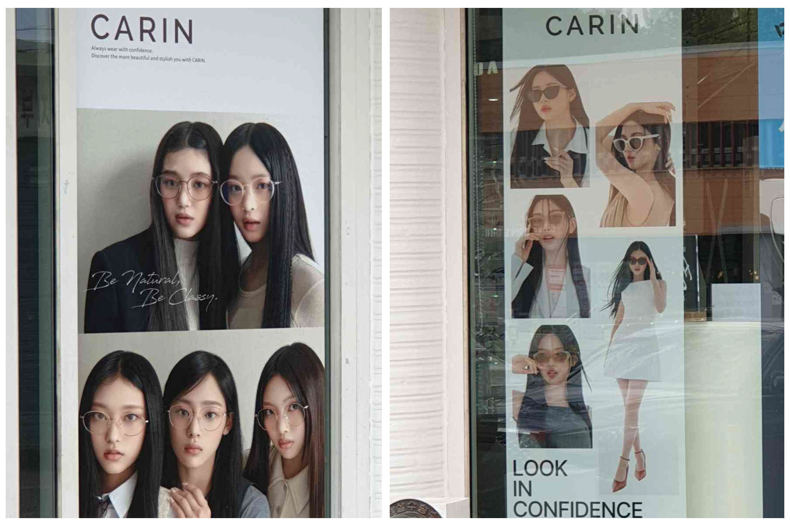

성별 고정관념
성별 고정관념은 매우 흔합니다. 첫 번째 사진은 미묘하지만 다림질을 하는 여성스러운 몸매를 보여줍니다. 이는 집안일을 하는 것이 여성의 일이라는 것을 의미합니다. 분명히 현실에서는 그러면 안 됩니다. 집안일은 누구나 할 수 있는 기본적인 기술이어야 합니다. 옆에 있는 사진은 옷가게의 창문 모습입니다. 여자 마네킹은 이렇게 작은데 비해 남자 마네킹은 엄청 크네요. 여기서 신체 표준은 매우 분명합니다. 이제 마지막 세 장의 사진은 저에게 놀라운 발견이었습니다. '여성스러운' 남성들이 멸시받는 나라에서 자라면서 메이크업 매장에서 남성들이 화장하는 모습을 보는 것은 충격적이었습니다. 물론, 스킨케어는 남녀노소 누구나 사용이 가능합니다. 물론 누구나 화장을 할 수 있습니다. 남자들도 화장을 해도 괜찮다는 걸 보니 정말 기분이 상쾌하네요. 화장을 한다고 해서 남자다운 느낌이 덜해지는 것은 아닙니다.
술 포스터
내가 한국에서 눈에 띄는 것은 술 홍보 포스터이다. 주변에 그런 사람들이 많이 있다. 그들은 이러한 음료를 홍보하기 위해 다양한 유명인을 활용할 것이다. 예쁘고 어려보이는 여자나 잘생긴 남자. 공통점 중 하나는 모두가 행복해 보이거나 상쾌해 보인다는 것이다. 나는 술을 많이 마시지 않지만 술이 모든 사람에게 어떻게 다른 영향을 미치는지 알고 있다. 그렇다면 왜 이 포스터에는 항상 행복해 보이는 사람이 나오는지 흥미롭다. 이는 술이 자신의 걱정과 스트레스를 잊게 할 수 있다는 생각에 영향을 줄 수 있다. 또는 술이 사람에게 줄 수 있는 일시적인 행복을 보여줄 수도 있다.

안경과 렌즈 광고
이것은 개인적인 취향이다. 이런 눈렌즈 광고에는 눈도 나오지 않다. 대신에 그들은 이 아이돌들의 가슴 사진을 보여주고 있다. 주요 초점은 눈이 주요 초점인 얼굴이어야 한다. 광고는 아래 사진처럼 얼굴을 클로즈업한 모습이 나와야 한다. 이 디자인 선택은 아름다움의 기준에 부합하다고 생각한다. 그것도 한국 아이돌만 보여준다. 한국 아이돌은 한국의 기준이니까 말이 되는 거죠. 하지만 다른 인종의 다른 사람들도 이 렌즈를 구입할 수 있다는 느낌을 받을 수 있도록 눈 렌즈를 광고하기 위해 다른 색상의 피부를 적용했다면 더 포괄적이었을 것이다. 회사는 제품을 더 다양한 모습으로 표현하면 제품이 얼마나 다재다능한지 보여줄 수 있다. 안경을 쓴 아이돌이 등장하는 이 안경 광고는 그런 느낌이 없었다. 이들 아이돌은 얼굴형과 외모가 비슷하기 때문에 브랜드가 충분히 다양한지 여부를 말하기는 어려울 것이다.
